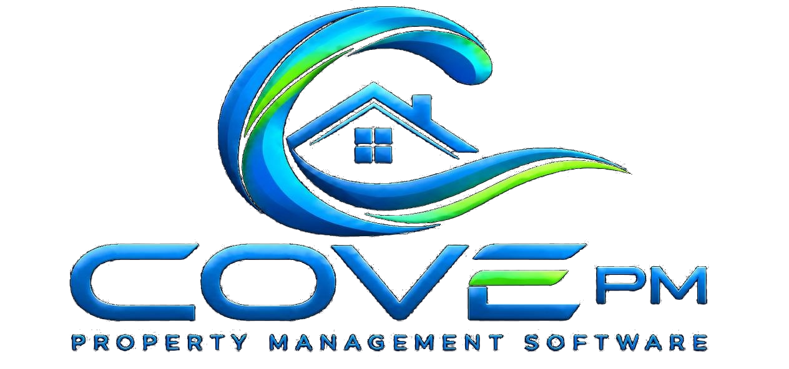
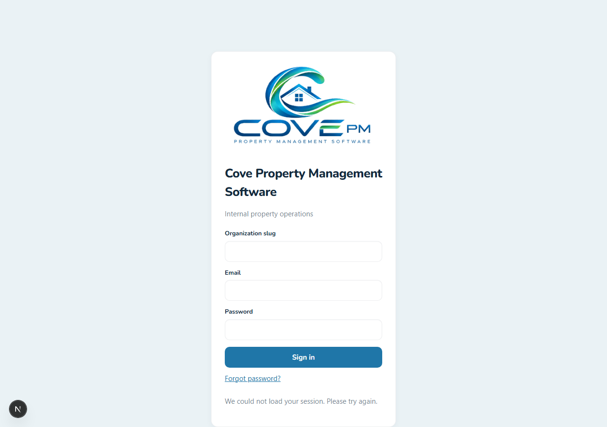
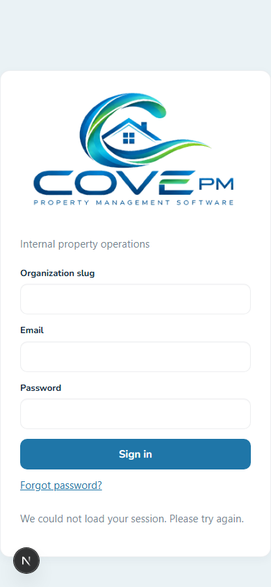
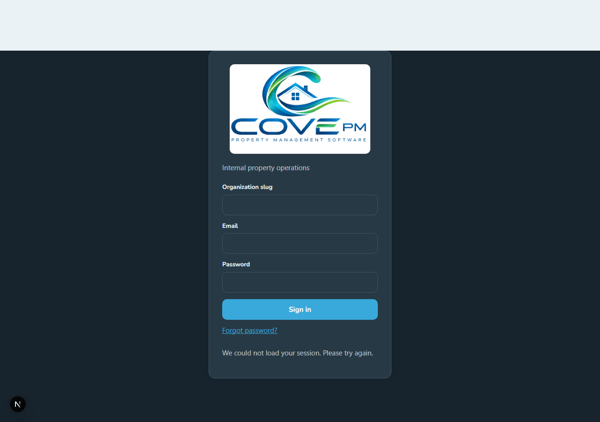

Updated shell, dashboard entry, responsive navigation, and day/night theme foundations informed by the competitive research brief.
Desktop login screenshot — approved Cove logo, product title, Cove palette, and accessible sign-in surface.

Mobile login screenshot — narrow viewport behavior and preserved logo legibility.

Night-mode screenshot — dark preference emulation, readable text/controls, and the approved light-surface logo treatment.

Dashboard quick actions use individual solid-fill feature marks in the Cove icon language: ocean blue primary shapes with restrained green accents.
data-theme; the shell toggle persists cove-theme and honors system preference on first visit.Authenticated dashboard capture is pending a running API/session; the local web runtime was verified without hydration errors on the captured sign-in routes.